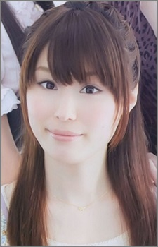

Nozomi Yamamoto is a Japanese voice actress. She affiliated with VIMS.
- Gender: Female
- Birthday: August 9, 1988
- Birthplace: Aomori Prefecture, Japan

|

|
|---|
| |
Nozomi Yamamoto is a Japanese voice actress. She affiliated with VIMS.
|
 |
|---|
| Yolko | Sword Art Online | Yolko was a member of Golden Apple. She is not the person who likes to be taken advantage of. |